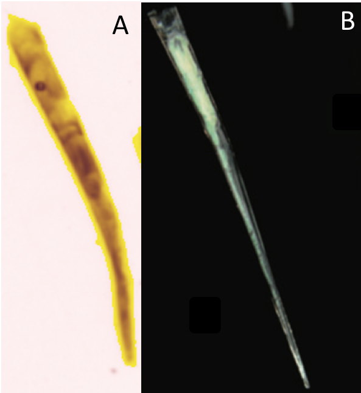
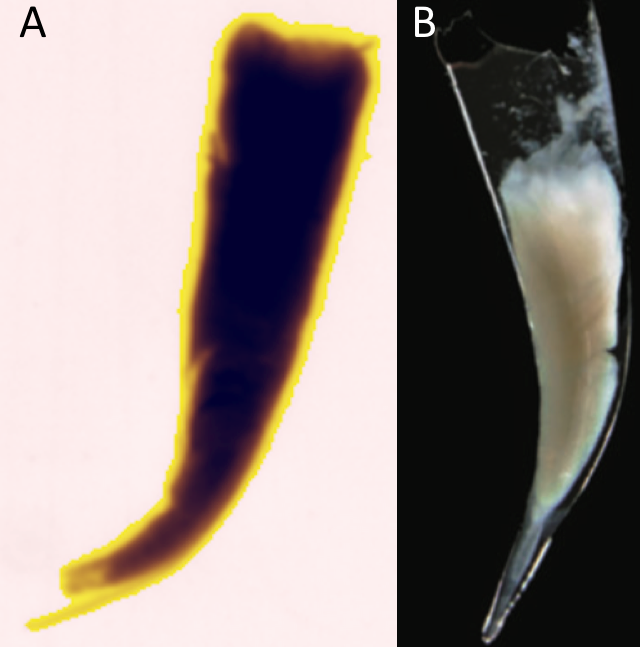
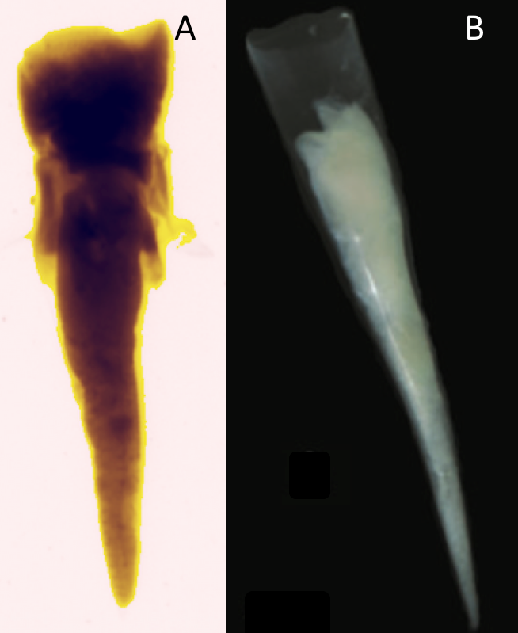
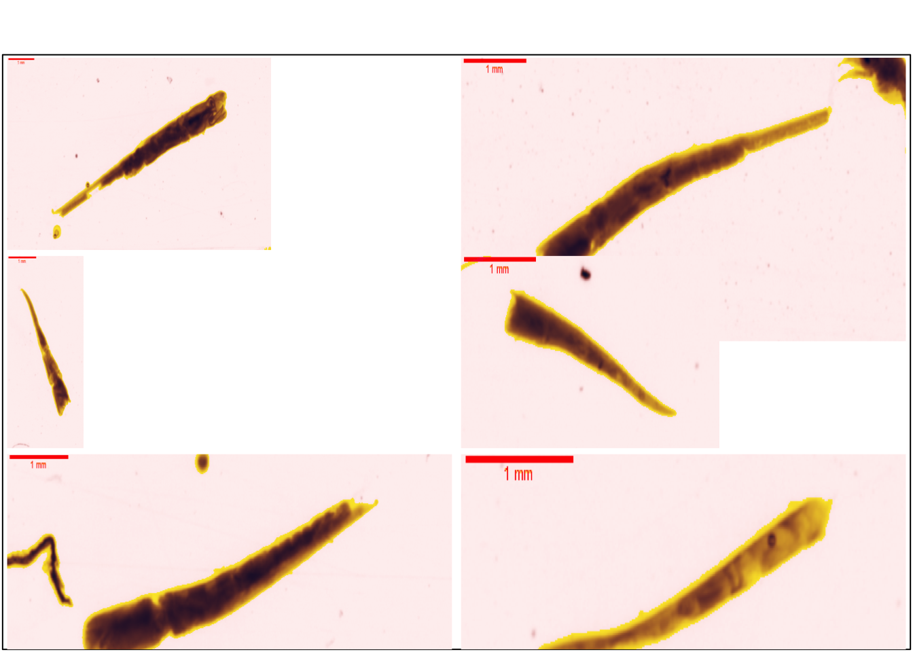
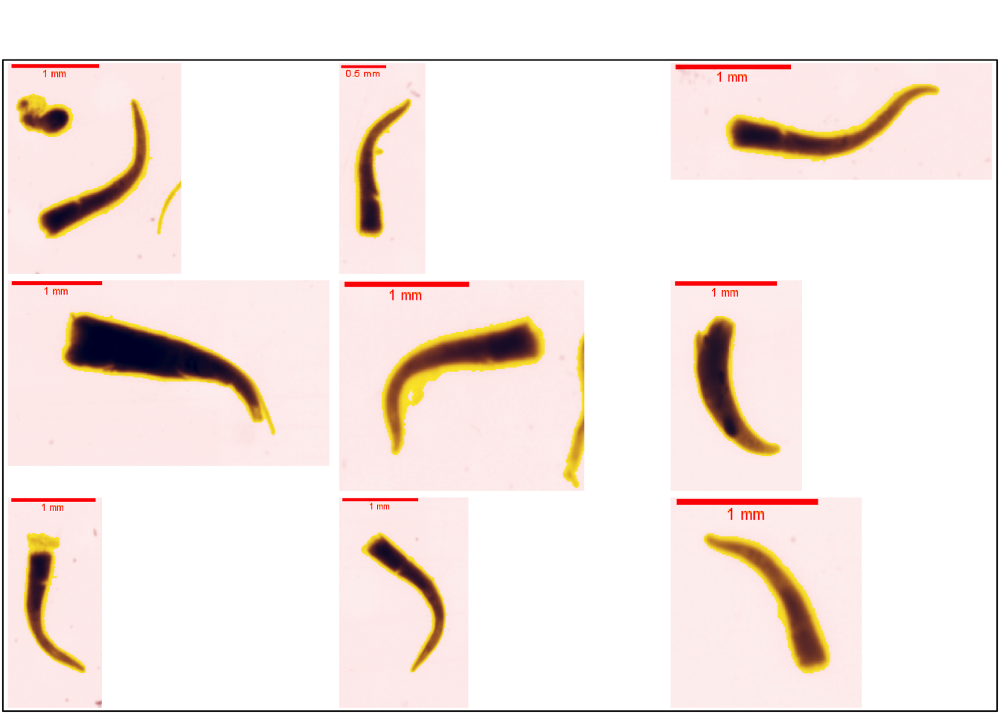
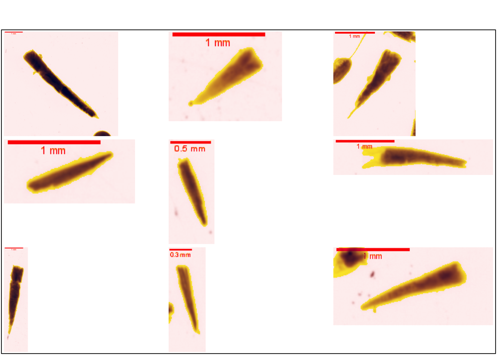
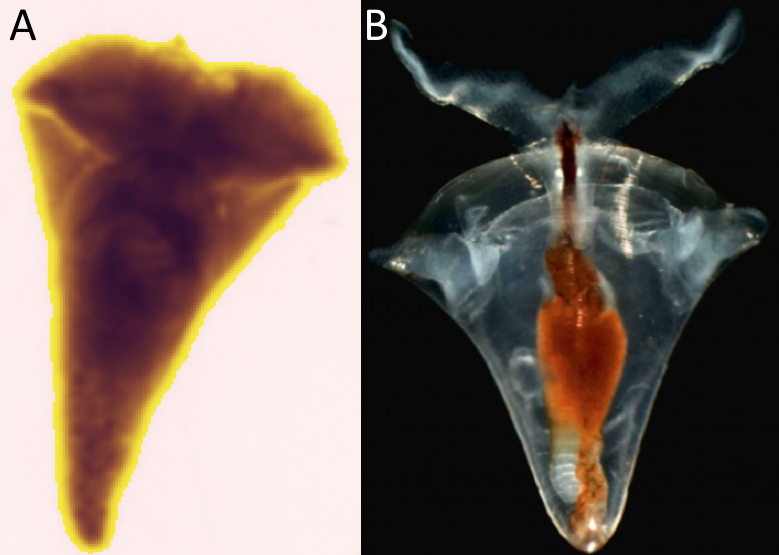
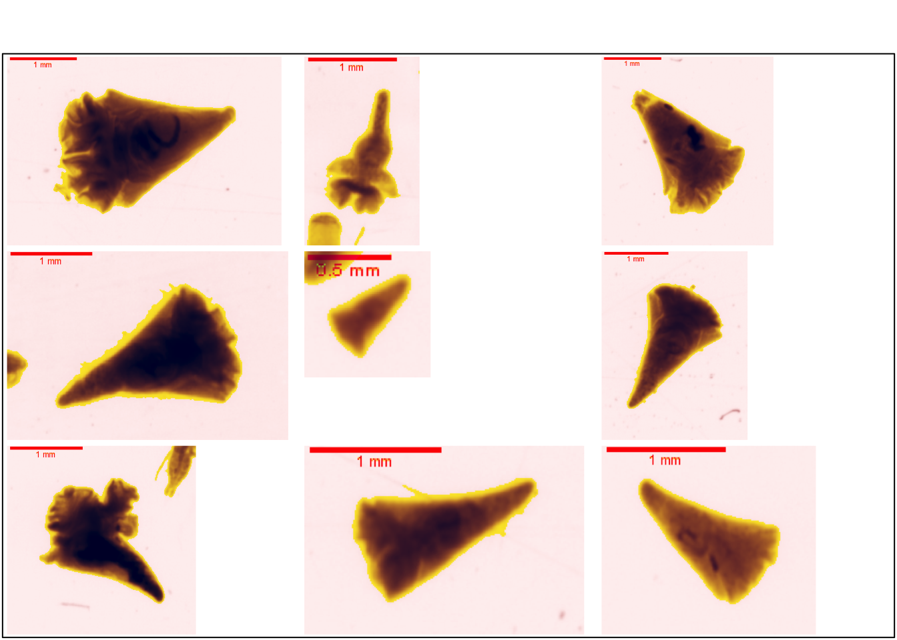

5 Mollusca
Le phylum des mollusques est sans doute l’embranchement d’invertébrés le plus connu du grand public. Ce phylum comprend un très grand nombre d’organismes différents, mais ayant tous des caractéristiques morphologiques communes (Ruppert, Fox, et Barnes 2004).
Symétrie bilatérale
La surface ventrale musculeuse est appelée le pied
La surface dorsale est généralement couverte d’une coquille protégeant la masse viscérale. Cette coquille est sécrétée par le manteau, un revêtement épidermique
…
Ce phylum contient différentes classes telles que les Bivalvia, Caudofoveata, Gastropoda, Scaphopoda,… (Horton et al. 2022)
Les études précédentes dont Quivy, Thomas (2018) ont identifié 2 genres faisant partie de la classe des Gastropoda, les Creseis et Cavolinia. Après analyse il apparaît que cette classification est erronée. En effet l’ordre des Cavolinia a été confondu avec celui des Clio faisant partie de la même famille des Cavoliniidae. Les Creseis eux ont bien été identifiés mais la classification est affinée dans cette étude.
Les Gastropoda sont donc une classe de mollusques possédant une masse viscérale torsadée recouverte généralement d’une coquille univalve dorsale. On retrouve des individus marins, dulçaquicoles et terrestres (Janssen 2012).
5.1 Creseis
Ce genre de mollusque fait partie de la famille des Creseidae et de l’ordre des Pteropoda (Horton et al. 2022). Ce sont des organismes planctonivores capturant leurs proies à l’aide de mucus. Ils possèdent une coquille caractéristique pointue ainsi qu’une paire d’organe servant à la natation sur la partie supérieure (Lalli et Gilmer 1989).
La classification de ce genre a été établie de part la morphologie de la coquille, caractéristique facilement utilisable lors de l’analyse de vignette, mais cette classification a longtemps été débattue. Les dernières études génomiques ont permi de vérifier certains taxons établis par la taxonomie mais en ont également remis d’autres en cause (Gasca et Janssen 2014). Les différentes vignettes seront classées en fonction des principales espèces dont la taxonomie a été vérifiée récemment par génomique.
Les vignettes ont permis d’identifier 4 espèces ( Figure 5.1 ) : Creseis clava ( Figure 5.1 (a) ), Creseis virgula ( Figure 5.1 (b) ), Creseis conica et Creseis chierchiae ( Figure 5.1 (c) ) . Les deux dernières étant très proches morphologiquement elles sont rassemblées dans la même classe du set d’apprentissage.



La Figure 5.2 propose des vignettes supplémentaires de C. clava.
plot_vignettes(vigns, group = "creseis_clava", nx = 2 )
La Figure 5.3 propose des vignettes supplémentaires de C. virgula.
plot_vignettes(vigns, group = "creseis_virgula")
La Figure 5.4 propose des vignettes supplémentaires des C. conica et C. chierchiae.
plot_vignettes(vigns, group = "creseis_conica_chierchiae")
5.2 Clio
Le genre Cavolinia est un genre de mollusque faisant partie de la famille des Cavoliniidae et du même ordre que Creseis, c’est-à-dire les Pteropoda (Horton et al. 2022). La morphologie est assez semblable entre le genre Clio et le genre Creseis, mais la position de l’épine caudale et la forme générale du corps permettent de les distinguer (Janssen 2012).
Le genre Clio comprend plus de 80 espèces et il n’est pas possible simplement avec les vignettes de les distinguer.

La Figure 5.6 propose des vignettes supplémentaires.
plot_vignettes(vigns, group = "clio")